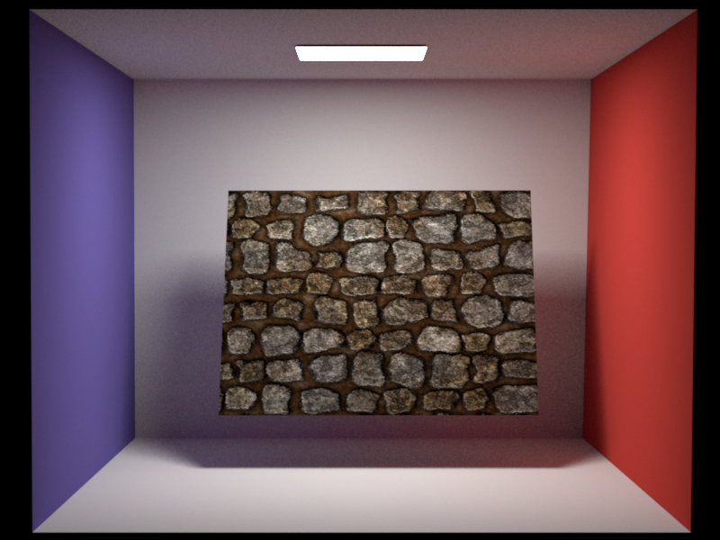
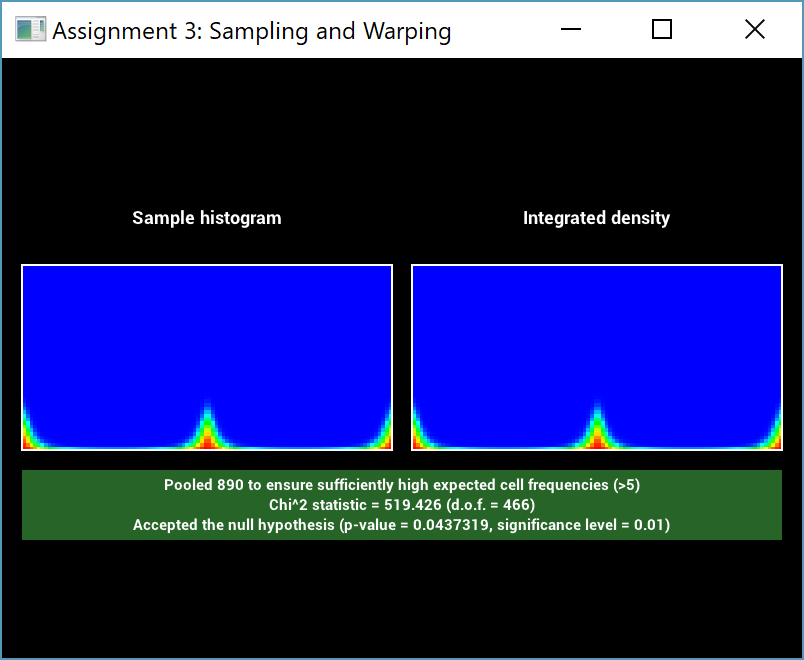
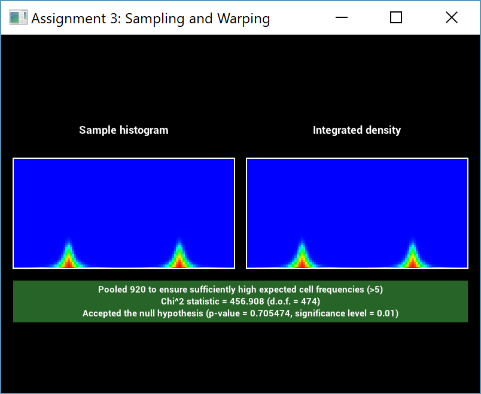
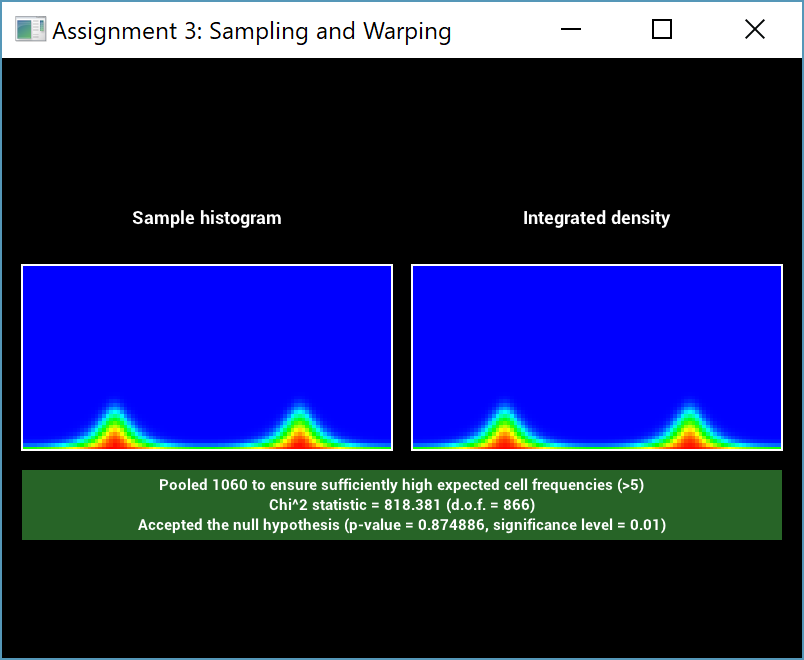

**Advanced Computer Graphics Project Report**
Motivation
================
My goal was it to create a small scale scene featuring a number of terrariums as shown below. The main elements would therefore be plants and metals of various roughness.
To relate my image to the theme of this year's Rendering Competition, I wanted to build the scene as if the terrarium creator was in the middle of his construction process: with a crowded, messy, dynamic workspace that indicated recent use, and a single plant -- the "Last One" -- left outside of the terrariums, ready to be properly situated as soon as the creator returned.
Simple Features
================
Texture Mapping
---------------
Textures are a crucial aspect in rendering and can be used in a number of different ways, ranging from storing albedo information for a diffuse BRDF model to environment maps. I implemented a nested texture model in __nori/texture.h__ which currently has only 4 implementations:
- Constant
- Gradient: a bilinear interpolation of 4 corners
- Scale: a linear interpolation of two nested textures given a factor from a third texture
- Image: loads a bitmap and supports different wrap modes (Clamp, Mirror, Repeat)
Below is an example of my Gradient implementation, generated with a full-screen quad mesh, and my procedurally generated gradient texture:
Following are two simple texture examples. The left image is a simple bitmap texture, while the right one is constructed from the expression: $(\text{gradient} \cdot \text{checkerboard})^2$.

Bitmap TextureNested Texture
I also implemented two basic filtering modes for texture evaluation:
Point EvaluationBilinear Interpolation
Both images were generated by forcing Nori to perform one sample per pixel at the pixel center without sub sampling the pixel.
Thinlens Camera
---------------
To increase the realism of a scene, and to focus the viewer on specific parts of the image, one can use the effect of depth of field. This is not supported by the standard perspective camera implemented in Nori, so I implemented the classical thinlens model in __src/thinlens.cpp__. The following images show the effect of increasing the aperture over each image, while keeping the focus plane constant at the second teapot.
Bump Mapping
------------
Often, it is difficult to digitally reproduce the small defects that are an integral aspect of real world surfaces -- either the geometry used in rendering is not of high enough resolution to model these defects, or the performance impact of such high resolution geometry is undesirable. Bump mapping is a common technique to overcome this problem, by storing information about the surface in a texture.
The first version of bump mapping is normal mapping (in __src/normalmap.cpp__) where the texture stores tangent space normals. These are then transferred into world space and used as a new normal (by constructing a new orthogonal frame from the old one and the new normal).
The second version is height mapping (__src/heightmap.cpp__) where the texture stores height values. The partial differentials of the texture at a position then gives the adjusted local frame. A user defined parameter is used to scale the partials to vary the strength of the height mapping effect. Computing the new local frame is done by adjusting the tangent and binormal towards the normal with the value of the partials.
Lastly, I implemented Parallax Occlusion Mapping, which is a technique mostly used in realtime graphics. Here, a form of ray tracing is used to traverse the height map. This traversal only gives a new texture coordinate position at which the incoming ray should actually have intersected the surface. This new texture coordinate is then used instead of the old one and, as before, the same procedure as in height mapping is applied. This creates very obvious artifacts at the sides of the objects, but it is more realistic than normal and simple height mapping because it doesn't create artifacts at shallow viewing angles.
I implemented all versions of bump mapping as wrapper BRDFs. These take another BRDF as a child, and their only function is to compute a modified local tangent frame before calling the respective method of the child BRDF.
(Rough) Conductor
---------
For my scene, I needed to have a BRDF model for metal surfaces. Such objects are called conductors because of their electrical properties (in contrast to dielectrics). In the limit, they are described by a delta BRDF.
I used the 'spd' files provided in pbrt as the complex valued index of refraction for a conductor model. The accompanying fresnel equations are implemented in __src/common.cpp__, while the conductor BSDF itself is implemented in __src/conductor.cpp__.
CopperGold
Here is a validation against Mitsuba's conductor models:
I then used the Beckmann distribution (originally implemented for the microfacet model) to implement a rough conductor in __src/roughconductor.cpp__. Here, the process is very similar to the microfacet model, but instead of using the real valued fresnel equation, we employ the complex one, and there is no diffuse term.
$\alpha = 0.05$$\alpha = 0.2$
Since my Beckmann distribution had already been validated by the warptest during the Homework assignments, I instead used Mitsuba to render the same scene.
I also verified that my procedure for loading the spd file computes correct rgb values from the spectral data. The difference to Mitsuba-loaded values is always marginal, and can be explained by the much better integration scheme used in Mitsuba.
Anisotropic Rough Conductor
------------
Often, metals are brushed (because of their manufacturing process), which creates surface imperfections in circular patterns. To render this, the isotropic rough conductor is not sufficient; an anisotropic version is needed, which reflects light differently based on the viewing angle.
I extended the isotropic Beckmann distribution to an anisotropic one in __src/warp.cpp__. Initially, I had numerical issues for a subset of $\alpha$ combinations. I solved this by not using the equation verbatim but instead comparing with Mitsuba and using the there suggested modified exponent formula by Walter.
$\alpha_u = 0.05, \alpha_v = 0.2$$\alpha_u = 0.2, \alpha_v = 0.05$
I validated the anisotropic Beckmann distribution in the warptest by testing a large number of combinations:



For the combination of $\alpha_u = 0.1, \alpha_v=0.2$ I had to increase the number of samples used to pass the test. The isotropic rough conductor has to be extended in only one place, namely to compute a combined alpha value for the BRDF evaluation. The 2014 precompiled version of Mitsuba 0.5 does not provide an anisotropic version of the Beckmann distribution, and therefore no comparisons could be made. But since the isotropic version was compared and the only difference is in the also-verified Beckmann distribution, this is deemed sufficient validation.
One key element necessary for anisotropic BRDFs are continous tangent frames. These were initially not provided in Nori, but I added support for smooth vertex normal computation and tangent frames aligned with the UV parameterization (more on this in the Advanced Texture Filtering section).
Intermediate Features
================
Image Based Lighting
------------
My project includes image based lighting, which surrounds the entire scene with an environment map that is then treated as an emitter. This is a widely-used technique for simulating natural looking illumination and distant visual surroundings. My implementation in __src/environment.cpp__ does not use the hierarchical sampling method that I implemented for an earlier homework assignment. Instead, it is based on a scheme with a set of discrete $1D$ PDFs: the first $1D$ distribution presents the distribution of light over the rows of the image (obtained by summing the pixel values in each row). This is used to choose a row of the image, and then another discrete $1D$ distribution (different for each row) samples a column based on the relative intensity of each pixel.
I used two strategies to validate the correctness. First, I verified that there is no difference between doing standard Path Tracing (which does not sample the emitter) and Path Tracing with NEE (which samples the emitter):
This visually verifies that the sampling density matches the corresponding PDF that was computed for it. Furthermore, I used the warptest for statistical validation. Sadly this was not as straightforward. The test passed for small environment map sizes (here, 64x32 pixels):
However, this was no longer the case for large sizes (here, 2048x1024). This is especially striking because the visual comparison between the histogram and the integrated density looks extremely similar.
Realistic Camera
------------
Traditionally, computer graphics either uses a standard perspective camera (which does not simulate an aperture) or the previously implemented thinlens model (which has an aperture but no lens thickness). With these simple models, one can not simulate the complex optical effects commonly happening in real world lenses.
PBRT describes a camera model which overcomes these limitations and calls it the 'Realistic Camera'. Such a camera is specified as a list of lens elements, each described by the radius of its curvature, the distance to the next element and its diameter. While PBRT has a number of lens specifications, I found the book Modern Lens Design by Warren J. Smith to be particularly helpful, since it gives more than a hundred lens descriptions, ranging from eye pieces to microscope lenses.
Initially, I followed the implementation by LuxRender, in which a ray is generated by sampling a random direction from the film plane, then tracing this ray through the lens system. The obvious drawback is that only a few of these rays will truly pass through the complete system; often they hit the barrel that houses the lens instead. Therefore, I consulted PBRT and based my implementation on theirs, which overcomes this flaw but extended the work considerably.
Following is a description of all steps necessary for rendering using such a lens system:
- Loading the lens description datafile and performing unit conversions.
- Focusing the lens system on the distance specified by the user. This is done using the Thick Lens Equation, which models the whole system of elements as a single one by computing the cardinal points and the principal planes. Using the Gaussian Lens Equation, one can then compute the focus distance, which is simply used as additional distance from the last lens element to the film.
- Computing the exit pupils. Each pixel on the film plane has a pupil of rays (parameterized by a 2D AABB on the last lens element) which actually pass through the complete lens and exit into the scene. Precomputing this set of rays is made possible by the assumption that the lens is radially symmetric; therefore the exit pupils need only be computed for a single one-dimensional slice. Computation is done using a brute force approach, in which a large number of rays are traced through the lens system for each pixel (of the 1D slice).
- Generating camera rays is then done by finding the precomputed AABB on the last lens element for the exit pupil. Sampling a random point on this
element then gives a ray from the film plane which is traced through the lens system. Some rays will still get stuck in the barrel, so it is crucial for the user of the camera to check the returned importance.
- I was not aware of an analytic way to compute ray differentials, so I used a numerical method that simply computes the offset rays and traces them through the system too. This can lead to situations where one of the offset rays does not leave the barrel, but the primary one does. I handled this by discarding the ray.
With this procedure, one is now able to use the realistic camera to render images such as the one below:
Simple lens with 3 elements
Up to this point, one important aspect that has been ignored: the aperture. Now, for a given setup, there is one lens element (without a curvature) which is considered to be the aperture. The size (diameter) of this element can additionally be specified in the scene file by the user. Traditionally, this is modeled as a circle but it is straightforward to exchange this for any other geometric representation. I implemented two models:
- n-gon: In reality lenses often use a number of blades, eg 5, to enable opening and closing of the aperture. This creates an outline of the aperture closer to a regular polygon than to a circle.
- ellipsoid: Some apertures are closer to an ellipse than to a circle.
Circularn-gonEllipsoid
Another feature of the aperture is the fact that one can explicitly change its size, and by extension, the subsequent effects. Closing the aperture, for example will lower the image brightness but increase the depth of field.
Here, the aperture is given by its diameter in millimeters. I tried a specification using the commonly used f-stop, but this is more difficult here because the f-stop can only be related to the focal length and the effective aperture, which is the projection/tracing of the aperture through the lens towards the scene. This proved troublesome to compute correctly.
There are a number of components one can validate for this system. In particular, I chose the following 3 tests:
- Focusing the lens: I validated this by adding an arbitrary distance from the last lens element to the film plane in the lens description file. As expected, this resulted in a focusing distance which was exactly that much smaller.
- The exit pupils used for sampling ray directions can be tested by checking that if one makes them larger, the image will not change but only converge slower (because of the discarded rays).
- I validated my unified aperture test (whether a ray hits the aperture) by checking that if the number of n-gon points is large, and if the ellipse axes are the same length, the result will be the same as the standard circular aperture.
Advanced Texture Filtering
------------
To improve over standard bilinear interpolation for textures, I also implemented more advanced methods (even though I did not use them for my final rendering since it was not necessary).
The first step is to compute partial derivatives for the vertex positions $\frac{\partial \textbf{p}}{\partial u}$ and $\frac{\partial \textbf{p}}{\partial v}$ while loading the mesh file. We must also trace not only a single ray from the camera, but a tuple of 3 rays -- typically called a ray differential. These are the standard primary ray and offset rays in each pixel direction. Given these, for a particular hit point, one can then (together with the partial derivatives of the hitpoint) compute the texture differentials with respect to pixel positions $\frac{\partial u}{\partial x}, \frac{\partial u}{\partial y}, \frac{\partial v}{\partial x}, \frac{\partial v}{\partial y}$, where $x, y$ are pixel coordinates (__src/mesh.cpp__). This is the crucial information needed for better texture filtering, because it gives information regarding the area that one pixel covers in texture space. There are two common filtering methods based on this insight:
- Trilinear Filtering assumes that the pixel covers an isotropic circle in the texture space, and interpolates between two mipmap levels (__src/mipmap.cpp__). This creates artifacts due to over blurring (as seen in the images).
- Elliptical Weighted Averages lift this assumption, and computes the ellipse which this pixel covers in texture space. While I did implement this method, I would like to state that the code for computing this elliptical sampling is (while not copied from PBRT) very similar to the implementation found there; I therefore am not seeking credit for implementing this method.
Once again, these images were computed with one pixel sample in the center of the pixel.
For validation, I considered a simple quad facing the camera with size one. In this example the vertex partials are simply the unit vectors and the texture partials are then the combination of screen resolution and texture mapping (TextureMapping2D::differentiate in __src/mipmap.cpp__).
Other Features
==========
XML Features
----------
I extended the Nori xml file format in a number of ways:
- Named sub objects: While attributes like int/float/string have names, this is not true for sub objects. This addition was necessary in order to have more than one texture in a BSDF, so that we could differentiate between them (aside from order).
- BSDFs can be tagged with an id that can later be referenced. This enables using one BRDF object multiple times. It is useful when there are multiple meshes with the same BRDF (such as the terrarium glass, or the soil elements), to avoid having to individually enter the BSDF parameters in each instance. It was particularly useful for tuning the parameters of these materials, as they only needed to be changed in a single place.
- Object groups to enable easy and quick selection between different groups of objects. While I was setting up the xml, I often wanted to load a particular subset of the full scene (to avoid processing all ~4 million triangles unnecessarily). Commenting the objects was tedious and error prone, but this grouping allowed me to easily include/exclude semantically meaning object groups (e.g. shovel, filled terrarium) with a simple boolean tag.
While this is not an XML feature, I also increased efficiency and reduced memory requirements by ensuring that textures were only loaded (and mip-mapped) in a single instance, which could then be referenced by multiple objects' BSDFs.
Rotated Tangent Frames
----------
To render general brushed metals, it was insufficient to only use the aforementioned rough conductor. Instead, one needs to rotate the tangent frames on the surface of the object in circular patterns. I first tried to use large scale patterns which slowly varied over the surface, but the result was not as interesting as I had hoped.
Therefore I used commonly available 'Scratch Maps' (below) to orient the tangent frame at each position in the direction of the scratch (if possible).
This is done by computing the partial differentials of the texture and orienting the tangent in the direction of the steepest ascent and the binormal orthogonal to the direction along the scratch (__src/rotation.xml__ is another wrapper BRDF). The result convincingly shows scratches:
Homogeneous Absorbing Medium
----------
To simulate a simple liquid in a glass, I used a homogeneous absorbing medium without any in-scattering. This is only parameterized with the absorption coefficient $\sigma_a$. I extended the BRDF base class with another method that returns whether the object contains a medium inside (for the given pair of $\omega_i, \omega_o$) and, if so, the coefficient of that medium. All but the dielectric in __src/dielectric.cpp__ return no medium. The Path Tracer calls this method after each BRDF sampling event and after the next ray trace it uses (if necessary) the last $\sigma_a$ coefficient to compute the transmittance.
No mediumLemonade
Final Image
================
Below is the final rendering which I submitted to the 2018 Rendering Competition:
As hoped, the scene conveys the middle of the creation process: a crowded, messy, dynamic workspace that indicates recent use, and a single plant -- the "Last One" -- remaining outside of the terrariums, ready to be properly situated as soon as the creator returns.
Credits
=======